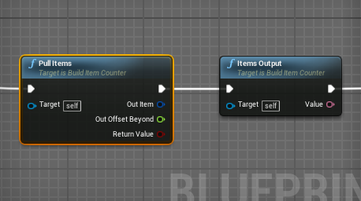

I getting info from inventory and getting the Item, Count and Item Name, Plus the Type count and Index Types. The issue is that when the results are displayed in the text block. The results blink. As it would in the foreach loop. Any one have any idea on how to keep the results from blinking Here’s my node setup
Binding Textblocks and forwach loops

-
What is the for each connected to?
-
The return node basically terminates that function, so only the first element would get displayed. So to make it display all you would need a list. I don’t remember rn how they are made, but when I get home I can look how I did it before
Yes, Sorry about that, I didn’t think to send you all the nodes. I will in this post. as I said, The loop is from the inventory.


The way you done it is very odd, because
- The manufacturer class needs power and a recipe to work
- You’re doing the grab logic from the widget
What I suggest is make your building a FGBuildableFactory, and the grab logic should be in Factory_Tick event to always grab and put it in an inventory component you add to the object.
Then, the function looks fine after you change it from getting the output inventory to getting your inventory, except the list issue that I told you about
Well I don’t under stand why it is odd, This comes from the online tutorial, The online Tutorial had it setup to a FGBuidlable. I had it changed to help with the inventory system. and the manufacturing buildable, has the inventory built it, It’s just there’s options missing is this class, like the FGInventory class does. In the buildablemanufacturing I all ready pull from the inventory and output it to a conveyor. The idea behind this is just to count and display info on each item goes threw the item counter. Before I added in the Grab all Items from inventory in the widget. The nodes just didn’t work, So I had to add that in. It works. It’s just the issue is that the info coming from the inventory blinks on and off as is gets sent to the widget designer.
One more thing. This machine does have a recipe and power and I am looking threw tutorials. On what I’m trying to do. and there’s nothing on this. so when you get home, You mite be able to help with using a listview.
The FGManufaucturer isn’t the appropriate class for a machine that shouldn’t have a recipe, but just accept everything. And the docs don’t say to put the machine logic in the widget, even if you keep it as a manufacturer, you should move it to Factory_Tick
Check the image at the bottom of this page
It is exactly what you’re trying to do
This is how I set it up in the buildable. I added 2 new functions and run them. and these are coming from a factory tic.

this is how I put the inventory

This is how it outputs it

{kind=link}
It’s still overcomplicating it. Look at the picture I linked. It does all you want your building to do: count items and item types
It does. It works fine so far. I just need to fix the blinking out issue. and I guess your saying that adding it to a list will fix that. So I’ll have to wait until you get home. Have you had time to go threw the classes for the warehouse I make to find out why the default widget doesn’t work.
They blink because the inventory keeps switching from an item to no items, which is because of the overcomplicated way you did it. Your way doesn’t actually count the items, it only displays the content of the inventory which immediately empties.
Please, look at the blueprint I sent. It counts the items the right way, and making the UI for it is just interactObject->Cast To->Get ItemCount
sorry, All I see is the online tutorial you sent the one I been following for this machine. I don’t see a Bp class attached
At the very bottom there’s this image https://docs.ficsit.app/satisfactory-modding/1.0.0/_images/beginners_guide/simpleMod/machines/SimpleMachine_Grab.jpg
{kind=link}
It is not the entire asset, just an image with the blueprint graph you have to do for the item counter
See that’s the option I had setup before about a month ago when I 1st started on the tutorial, The other guy that was helping me with it. Couldn’t help for the last few days he’s having family issues, That we removed that. Didn’t need it. So he came up with the idea you saw. and It’s been working. Like I said.
From what I read that’s an Grab override function.
Yes, so when the output wants an item, you take one from input and count it
Right. when you get home you can show me your listview so I can see what your doing so that the outputs don’t blink on the display. i still looking for small sample on google and haven’y fount one yet. I more then likely will have to wait until you get home
I don’t remember exactly its name, so I didn’t find the listview on Google either, I’ll look in my projects
But this won’t solve the blinking problem. The BP graph in the picture will, because it counts the right way (counts all items, instead of the items currently in the buffer)
Well see I don’t your setup or what your trying to do, if you look at the end of that Grab Output. You see that it prints the results to the Chat Message. That’s a crazy way to displaying info when it should be displayed in the designer of the widget. That’s why I’m not using it and that’s not the way to go. Seeing all that crap running threw the Chat Messages, Doesn’t that bother you. It did with me, That’s one reason why I changed it. MrHid from the discord server is the one that’s been helping me with it. His Partner’s family have issues and he’s been helping them with that. This sample that I shows you is in the Mod Sample in the starter Project. It’s the Grinder MK1. you mite want to take a look at it. As you can see I all ready tried that machine and it doesn’t work. So that’s the reason why I have mine setup the way I do.
… you gould have just removed the enter chat message and do it the widget way while keeping the rest of it, which does exactly what you want
Yes I tried that too. The guy that helped me with just told me I didn’t need it. So I removed it. I spent like over a week on it tried to get it to work, It just didn’t work. By not working I mean it didn’t send anything out to the widget